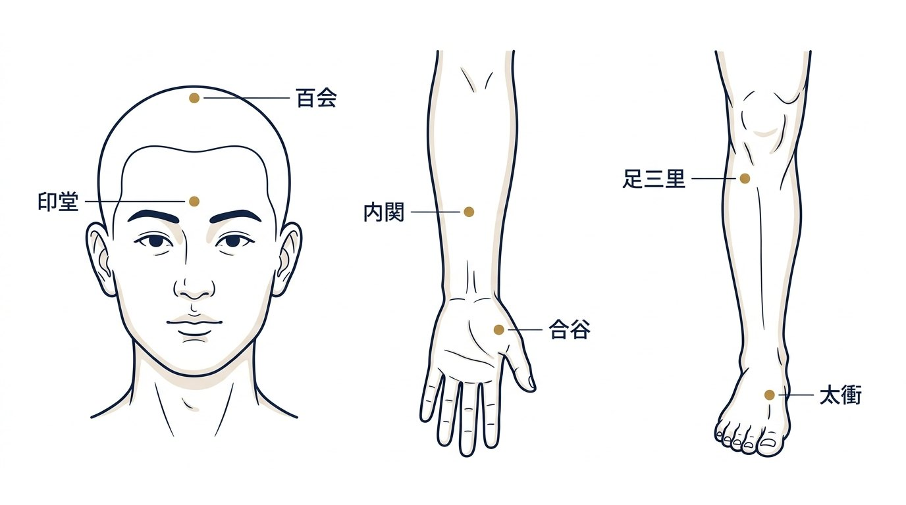

異臭症の鍼灸
実際の匂いが別物に感じられたり存在しない匂いを感じる嗅覚の質的障害です。耳鼻科での精査を前提に、鼻周囲と脳の過緊張の双方へアプローチします。


院長YouTube解説・関連動画
公開日：２０２１年 ７月２３日
更新日：２０２４年 ７月２８日
本日は異臭症について解説させていただきます。
☆本記事の内容
- •異臭症とは
- •異臭症の原因
- •異臭症の症状
- •異臭症の改善方法
- •異臭症のまとめ
- •異臭症は、嗅覚の異常の１つ
- •原因は匂いを感じるためのルートが間違って構築されていること
- •異臭症の症状は、本来の匂いとは違う匂いに感じること
- •ほとんどの異臭症では嗅覚の低下に対して改善を行う
- •異臭症の改善のために日常生活でできること
- •鍼灸院で見る異臭症のリアル
- •異臭症のセルフケア
- •異臭症に効果的なツボ
銀座そうぜん鍼灸院の宗前です。
このページを書いている私は、鍼灸師として１３年、担当した利用者様数８０，０００人を誇り、病気の休職者３００人を社会復帰できるまで回復させてきた実績があります。
現在、当院では嗅覚障害で来院される方が非常に多いです。最近では耳鳴りで当院に通っている方よりも嗅覚障害で通ってくださっている方が多いです。
🎥 他のYouTube切り抜き・解説を読む（あと2件）▼
異臭症は、嗅覚の異常の１つ
異臭症は、嗅覚の異常の１つです。ある特定の匂いに対して本来の匂いとは違う匂いに感じます。
異臭症には種類があります。刺激性異臭症と自発性異臭症です。症状によってどちらの種類の異臭症であるかを判断します。
刺激性異臭症は、ある特定の匂いを嗅いだ時違う匂いに感じたり、何の匂いを嗅いでも全て同じ匂いに感じたりする症状が現れます。
自発性異臭症は、近くに匂いのあるものがないのにもかかわらず匂いを感じる症状が現れます。
当院では1日３〜5人ほどの嗅覚障害の人を対応しています。コロナ後遺症、インフルエンザ、ストレス、副鼻腔炎の手術後などに匂いがしなくなった人や匂いが薄くなっている人、食べ物の風味がわからなくなったという人をよく見ます。
嗅覚障害の中でも、異臭症の人が増えています。匂いがしない人、匂いが薄い人と同じ嗅覚障害の枠組みで考えられがちなため、本人はもちろん担当する医者もよくわからないというケースが多いです。
原因は匂いを感じるためのルートが間違って構築されていること
異臭症の原因は、詳しくは明らかになっていません。しかし、匂いを感じるためのルートが間違って構築されていることが原因であると考えられています。
異臭症を発症するきっかけとして多いものは、風邪などの感染症や大きな事故による外傷、アレルギーや薬、加齢などです。
異臭症の原因は、感染症、頭部外傷、神経変性疾患、薬物の副作用、化学物質の暴露など多岐にわたります。
・上気道感染症
風邪、副鼻腔炎、コロナウイルスなど
・頭部外傷
頭部に強い刺激を受け、その後発症することがある
・神経変性疾患
パーキンソン、アルツハイマー
・薬物の副作用
抗うつ病や抗てんかん薬など特定の薬物の使用
・化学物質の暴露
水銀や鉛など有害物質に触れることで起こる
1番多いのは感染症で２番目に多いのが副鼻腔炎の手術後です。
異臭症が発症する機序についての仮説
なぜ異臭症が起きてしまうのか、どのように発生するのか、については３つの仮説があります。
①嗅細胞の損傷
②神経再生
③中枢神経の異常
①嗅細胞の損傷
嗅覚は鼻腔内の嗅上皮にある嗅細胞が始まりです。これらの細胞は匂いの分子を感知して嗅神経を介して脳に信号を送ります。頭部外傷や感染症によって嗅細胞や嗅神経が損傷を受けることによってこの信号伝達が乱れて異常な匂いを感じることがあるのです。
嗅神経の損傷については、嗅神経や細胞の損傷によって正常な匂いの信号が歪み、脳が誤った匂いを感知することで起こります。このケースは鼻の中が問題です。
②神経再生
嗅細胞は再生能力を持っています。しかし、再生する過程で神経が誤って接続され、異臭症を発症するのです。このケースは鼻と脳の間の神経が問題です。
③中枢神経の異常
嗅覚神経が嗅球を介し嗅覚領域に届木、脳の特定部位が損傷し、匂いに異常が生じます。パーキンソン、アルツハイマーなどの神経変性疾患がこの仮説を支持しています。このケースは脳自体が問題です。伝達自体は全くありません。
嗅覚障害にはいくつか種類があります。
１.気導性嗅覚障害
匂いの成分が嗅粘膜に到達できないことで起こります。副鼻腔炎やアレルギー性鼻炎などのアレルギー症状が原因とされており、嗅覚障害の半数を占めています。鼻自体には全く問題ないですが、アレルギーによって気道が狭くなり鼻詰まりになると匂いの分子を感じ取れなくなります。
２.嗅神経性嗅覚障害
新型コロナウイルスによる嗅覚障害はこのタイプです。アンジオテンシン変換酵素２という酵素にはコロナウイルスが集まってきます。この酵素は匂いを感じ取る嗅繊毛や嗅細胞があるところにあり、そこでコロナウイルスが大暴れすることで細胞自体が死んでしまい匂いの分子をキャッチすることができずに起こります。
３.中枢性嗅覚障害
神経や脳の障害によって起こります。交通事故による頭部への強い刺激や脳腫瘍、脳出血、脳梗塞などが原因となります。アルツハイマー病やパーキンソン病と合併することもあります。
嗅覚障害をもっと細分化すると量的障害と質的障害に分かれます。
量的障害は、匂いの感覚を減弱した状態である嗅覚低下と全く匂いを感知できない嗅覚脱失に分けられます。
質的障害は匂いは感じるものの変化を生じた状態で、代表的なものは異臭症です。
異臭症も刺激性異臭症と自発性異臭症の２つに分けられます。刺激性異臭症は、周囲に匂いの物質が存在する異常で、自発性異臭症は本人の身が自覚的に感じる状態です。これを理解することで嗅覚障害の状況を理解することができます。
鍼灸院に来院する方は嗅覚脱失が多いです。当院でも１〜３年間鼻の嗅覚がしていないという人が約８割で２割が嗅覚低下です。
遺伝的要因:異臭症は通常、遺伝的変異によって引き起こされます。この変異は、トリメチルアミン-N-オキシダーゼ（FMO3）という酵素の活動を低下させます。FMO3酵素は、トリメチルアミンを無臭のトリメチルアミンN-オキサイド（TMAO）に変換する役割を担っています。
酵素活動の低下または不足:FMO3酵素の活動が低下するか、またはこの酵素が不足しているため、体内でトリメチルアミンが適切に処理されず、体臭として排出されます。
食事:魚、卵、レバー、豆類など、コリンやレシチンが豊富な食品の摂取は、体内のトリメチルアミンの量を増加させる可能性があります。
肝臓の病気:肝臓が損傷している場合、FMO3酵素の生産が減少することがあります。
特定の薬剤や化学物質:一部の薬剤や化学物質がFMO3酵素の活動を阻害することがあります。
異臭症の症状は、本来の匂いとは違う匂いに感じること
異臭症の症状は、ある特定の匂いが本来の匂いとは違う匂いに感じることです。
異臭症は症状によって刺激性異臭症と自発的異臭症の２種類に分けられます。刺激性異臭症の症状は、ある特定の匂いを本来の匂いと違う匂いに感じたり、何の匂いも同じに感じたりすることです。
自発的異臭症の症状は、近くに匂いのするものがないのにもかかわらず匂いを感じることです。周りの人は感じていない匂いを自分だけが匂いを感じるのです。自発的異臭症の匂いの現れ方は、非常に様々です。
異臭症の主な症状は、体からの特有の強い臭いです。この臭いは通常、以下の特徴を持ちます。
魚臭:体から発する臭いが魚のような強烈な匂いであることが最も一般的です。これは体がトリメチルアミンという化合物を適切に分解できないために起こります。
汗、尿、呼吸からの臭い:臭いは汗、尿、息など体のさまざまな分泌物から発生します。つまり、口臭、体臭、尿臭などが異常に強くなり得ます。
臭いの強度の変動:臭いの強度は日によって異なり、食事内容、ホルモンの変動、ストレス、身体活動などによって増減します。
社会的および心理的な影響:強い体臭は社会生活に大きな影響を及ぼすことがあり、自尊心の低下、恥ずかしさ、孤立感、うつ病などの心理的な問題を引き起こすことがあります。
異臭症は、存在しない匂い、実際の匂いを異常に感じることです。異臭症には、主に２つのタイプがあります。
普通の花の香りが腐敗した匂いに感じられることがあります。異臭症の人は、焦げた匂い、腐った匂い、化学薬品の匂い、金属の匂い、タバコの匂い、カビの匂いなどと言います。
・焦げた匂い
焦げた食べ物のような匂い
・腐った匂い
腐敗した食べ物やゴミのような匂い
・化学薬品の匂い
揮発性の化学物質や工業製品のような匂い、ガソリンスタンドの匂いなど
・金属の匂い
金属的な酸味や鉄のような匂い
・タバコの匂い
実際は煙のないところでもタバコの煙を感じる
・カビの匂い
湿ったカビの匂いや古い布のような匂い
当院で対応する人で1番多いのはベルトの匂い、皮の匂いです。
異臭症の改善方法は、まだ確立されていません。しかし、ほとんどの異臭症で嗅覚自体が下がっているため嗅覚の低下に対しての改善方法が行われます。
主に嗅覚の低下に対しては薬を使って改善を行います。日本ではまだありませんが、海外では手術によって異臭症が改善したケースもあります。
異臭症の改善に対して使われる薬の効果には個人差があります。医師と相談し、自分に合った方法を見つけることが大事です。
食事の調整:TMAの前駆体となる食品の摂取を制限します。これには、コリンが豊富な食品（レバー、卵、魚、豆類、一部の野菜など）の制限が含まれます。
活性炭や銅クロロフィリン:活性炭や銅クロロフィリンのサプリメントが、体内のTMAを減少させる助けとなることがあります。
適切な個人衛生:頻繁な入浴やシャワーによって皮膚からのTMAを洗い流し、臭いを減少させます。
弱酸性の石鹸やローション:弱酸性の石鹸やローションを使用することで、皮膚上のTMAの量を減らすことができます。
抗生物質:特定の抗生物質（例：メトロニダゾール）が、腸内細菌の活動を減少させ、TMAの生成を減らす助けとなることがあります。
消臭製品:消臭スプレーやその他の製品を使用して、臭いをカバーします。
心理的サポート:異臭症は心理的なストレスや社会的な問題を引き起こす可能性があるため、心理的サポートやカウンセリングが役立つことがあります。
これらの改善法は、症状の緩和と日常生活の質の向上を目指しています。改善の際は医師や栄養士と協力して、個々の状況に合った計画を立てることが重要です。
異臭症の改善のためには、日常生活でもできることがあります。
１つ目は、きちんと睡眠をとることです。異臭症の人の中には睡眠をきちんととるようになってから異臭症の症状が和らいだという人がいるのです。
睡眠と異臭症の関係についてはまだわかっていませんが、睡眠が不足することで嗅覚に異常が起きることがあると言われています。
２つ目はバランスの良い食事をすることです。食生活が偏り、食事から摂取する亜鉛の量が不足すると味覚障害が起きることがあります。味覚と嗅覚は大きな関係があるため、味覚障害と同時に嗅覚の障害も起きることがあるのです。
異臭症の可能性がある場合は、食生活や生活習慣を改めて見つめ直してみることをお勧めします。
鍼灸院で見る異臭症のリアル
・大体の人は改善する
・判別はしにくい
・症状の出方が一辺倒
・原因は脳過敏
異臭症で悩んでいる人は鼻を調べたり、点鼻薬、メチコバール、抗うつ剤を全部経てから鍼灸院に来ます。
異臭症では鼻の嗅細胞が問題で、匂いの分子をキャッチするところまでは正常ですが、電気信号に変えるところが異常をきたしていて、その誤作動によって誤った情報が脳に伝わって臭いというように悩んでいます。改善のポイントは嗅細胞の正常化なのです。
これは、異臭症の判別がしにくいのは訴え方が人によって異なるためです。腐った卵のような匂い、ベルトの匂い、溝、川のような匂いなど匂いに対する答えが全然違うため、どの機序によるかが非常にわかりにくいのです。
当院で施術をした人でも嗅細胞の再生を狙って改善を行い、訴えの異なる人の症状が改善しています。そのため、どのタイプなのか判別する前に良くなってしまったり判別できずに終わってしまったりすることが多いです。
色々な訴えがありますが、結局ほとんどの人が良くなってしまうため改善した後の追跡の経過を知りたくてもなかなか知ることができません。
ただし、症状の改善の仕方は一辺倒です。施術を行っていくとどんどん臭い匂いが薄くなったり臭い匂いを感じたりするシチュエーションが減ったりします。今日は臭くても昨日は臭くなかったり、昼は臭くなかったが夜は臭くなったりなどすっかり改善するのではなくシチュエーションがどんどん増えていって改善していくという印象です。
異臭症の原因は脳過敏です。嗅細胞の正常化がベストですが、嗅細胞のアプローチをしても改善しない人が半数います。なぜ改善しないかを検討した結果、当院では脳過敏症候群が絡んでいるのではないかという結論に辿り着きました。
院長の仮説では、異臭症の原因は嗅細胞です。誤った匂いを認識してしまい、臭いことに悩んでいるうちに脳が興奮してしまい、匂いを覚えてしまいます。改善してなくなっていきます。半数の人は６割くらいまで良くなり残り４割は鼻に対するアプローチだけでは改善しません。脳にアプローチすることも必要になります。
当院では、アプローチも対脳と鼻を両方行うようにしています。そうすることで異臭症は良くなります。鼻の状態だけでは難しく、脳の誤った認識、興奮を取ることが必要なのです。
病院の先生には絶対無理だと言われた人が鍼灸では改善することもあります。現代医学では嗅覚を取り戻す薬や改善方法は存在しません。
当院に来る人の薬や改善方法は点鼻薬か亜鉛かビタミンB２か抗うつ剤かBスポットです。嗅覚に対するアプローチではないですが、病院の先生の淡い期待を感じ取れる対応ではあります。
時間の経過を待つしかないと言われたり嗅覚が死んでしまったら改善はできないと言われたりした人が当院に来院されます。
嗅覚の細胞の芽が残っていれば改善する確率が上がります。院長の施術では改善する前に線香の匂いを嗅いでもらっています。この線香の匂いを認識できるかできないかで施術方法を変えているのです。
線香の匂いが認識できる人は嗅覚の能力がある嗅覚の伝導路は正常で、鼻から脳の通り道も正常、嗅繊毛が微量にある状態です。嗅繊毛は匂いの分子をキャッチする繊毛でそれを嗅細胞に送り、嗅細胞が電気信号に変え、それを脳に伝えていくという役割を果たしています。
この嗅繊毛の量が少ない、むしろなかなか生えない人は鍼灸で刺激することで嗅繊毛が生えて匂いをキャッチできるようになり回復します。線香の匂いを嗅ぐことができれば、リカバリーは十分可能です。
線香の匂いを嗅ぐことができない人は回復力次第です。当院の施術では鼻の施術を４５分行い、回復力を呼び覚ますアプローチを行います。
耳鳴りは発症する原因によって予後、回復が大きく左右されます。老人性難聴や老人性耳鳴りは基本的には改善しません。突発性難聴や耳の中の組織が壊れるような難聴は耳の細胞次第で改善するしないがはっきりしています。脳からくる耳鳴りは不安障害も一緒に併発しているため、不安障害も併発しており不安障害へのアプローチも必要になります。
嗅覚障害は完全に体の細胞の回復次第でどうにでもなる症状です。年齢、性別、罹患期間、悩んだ期間、匂いがしなかった期間は全く関係なく改善する人はちゃんと改善します。
【完全に改善しないタイプ】
副鼻腔炎の手術後や嗅細胞自体がボロボロになっている場合は完全には改善しません。嗅繊毛が生えれば良くなるが、細胞自体を失っている場合や手術によって鼻から脳に行くまでの神経を切られた場合はリカバリーは不可能です。当院でも５名くらい対応しましたが、副鼻腔炎の手術後で起きた嗅覚障害は改善できませんでした。
【改善が難しいパターン】
嗅覚が薄いと訴える人は改善が難しいです。その人は全ての匂いを嗅ぎ分けることができます。全ての匂いを認識でき、嗅ぎ分けられます。部屋の匂いや細かな匂いもわかりますが、ただ薄いと訴える人がいます。匂いの認識による自己採点が非常に高く、院長より匂いがわかっているのに嗅覚がまだ３割ほどしか改善していないと言います。
鼻の細胞は正常で鼻から脳に行く伝導路は正常で脳の認識も正常です。何かわからないが本人だけ異常に匂いが低下していると思っている人が一定数います。20〜30代に多いです。当院でもいらっしゃいましたが改善したことがありません。
「コーヒーが明確に嗅ぎ分けられない」「２つのコーヒーを嗅ぎ分けたい」など明確な目的がある場合は非常に施術しやすく改善しやすいです。
ただ薄くて何が薄いかわからない人はコロナの後遺症で嗅覚が脱失してしまいそのショックがフラッシュバックしているのでたんzす。非常に不可解な症状で難しいケースでもあります。
▼ 詳しく知りたい項目だけタップして開けます（全項目の医学解説を収録）
01. 原因とメカニズム
なぜ症状が起きるのか・鍼灸の作用機序を読む
▼
01. 原因とメカニズム
なぜ症状が起きるのか・鍼灸の作用機序を読む
異臭症は、特定の匂いが本来の匂いと違って感じられる刺激性異臭症（錯嗅）と、匂いの元がないのに感じる自発性異臭症（幻嗅）に分けられます。上気道感染症や副鼻腔炎後、頭部外傷などで傷ついた嗅細胞・嗅神経が再生する過程で信号伝達に誤りが生じることや、脳の過敏な興奮が関与すると考えられています。中枢疾患や副鼻腔疾患の除外のため耳鼻科精査を受けた上で、睡眠や亜鉛を含む栄養管理も重要です。
なぜ鍼灸で改善へ向かうのか？（作用機序の図解）
異臭症に対する鍼灸は、耳周囲・頸部の微小循環改善と聴覚・粘膜調整機序を通じて、お体本来の回復力を引き出します。
翳風・風池・合谷など、耳鼻咽喉領域の神経・血管と連動する経穴へ繊細にアプローチします。
首・顎まわりの深層筋緊張を緩め、内耳や粘膜周囲の滞った血流とリンパ循環を促します。
ストレスや睡眠不足で高ぶった交感神経を鎮め、音への過敏反応や粘膜の過剰反応を和らげます。
標準治療を妨げない設計で、生活支障度（THI等）の軽減と再発しにくい体調づくりを支えます。
02. よくあるお悩み
このような症状はありませんか？（4項目）
▼
02. よくあるお悩み
このような症状はありませんか？（4項目）
- ✓食べ物や日常の匂いが焦げた臭い・腐敗臭・革の臭いなどに変わる
- ✓周囲に匂いの元がないのにタバコや薬品のような臭いを感じる
- ✓風邪やコロナ感染、副鼻腔炎のあとから匂いの異常が続いている
- ✓病院の点鼻薬や内服だけでは変化がなく日常生活がつらい
03. 当院の施術アプローチ
施術の進め方・改善のポイントを見る
▼
03. 当院の施術アプローチ
施術の進め方・改善のポイントを見る
04. ツボ詳細・セルフケア一覧
線維筋痛症・慢性疲労症候群の全身鎮痛ツボ図解（6穴）
▼
04. ツボ詳細・セルフケア一覧
線維筋痛症・慢性疲労症候群の全身鎮痛ツボ図解（6穴）
実際の施術ではお一人おひとりの体質・症状に合わせて選穴しますが、線維筋痛症・筋痛性脳脊髄炎/慢性疲労症候群（ME/CFS）の中枢鎮静ケアの臨床でよく用いられる代表的なツボの目安です。
| ツボ名 | 位置の目安 | 主な狙い | セルフケアの注意点 |
|---|---|---|---|
| 百会（ひゃくえ） | 頭頂部の中央 | 中枢性感作（脳の痛み過敏）と睡眠障害の鎮静 | 触れるだけの極低刺激から始めます。 |
| 印堂（いんどう） | 左右の眉間の真ん中 | 自律神経の過覚醒・ブレインフォグ・不安感の緩和 | 目を閉じてゆっくり呼吸しながら軽く触れます。 |
| 内関（ないかん） | 手首の横ジワから指3本分肘寄りの中央 | 交感神経の高ぶり・動悸・吐き気の鎮静 | 労作後倦怠感（PEM）を起こさない穏やかな刺激にします。 |
| 合谷（ごうこく） | 手の甲、親指と人差し指の間 | 全身の疼痛閾値の安定化・頭頸部の緊張緩和 | 強い圧痛が出ない範囲で優しく押します。 |
| 足三里（あしさんり） | 膝の下外側、指4本分下 | 全身の回復力・消化吸収・自律神経の土台づくり | 体調の波に合わせて本数と時間を調整します。 |
| 太衝（たいしょう） | 足の甲、親指と人差し指の骨の間 | 筋の過緊張とストレス反応の鎮静 | 痛みが強い部位を避け遠隔から整えます。 |
05. 医学的根拠・国際査読論文（PubMed / Cochrane）
科学的エビデンス・出典リンク一覧（4件）
▼
05. 医学的根拠・国際査読論文（PubMed / Cochrane）
科学的エビデンス・出典リンク一覧（4件）
国際的な医学データベース（PubMed・Cochrane等）で報告されている線維筋痛症・筋痛性脳脊髄炎/慢性疲労症候群（ME/CFS）の中枢鎮静ケア領域の代表的な査読済み鍼灸研究をまとめています（標準治療との併用や研究上の限界を含めて正確に掲載）。
| 年・研究デザイン | 対象・規模 | 主な結果 | 限界・出典 |
|---|---|---|---|
| 2013年 大規模多施設RCT | 季節性アレルギー性鼻炎 422名（ドイツ） | 7〜8週のRQLQ QOLがシャム比0.5点・薬単独比0.7点改善（P<0.001）、頓用薬使用も有意減少（P<0.001）。 | 1年目16週では群間差消失、臨床的意義は慎重評価。 Ann Intern Med (PMID: 23420231) |
| 2021年 メタ解析 | 耳鳴り 8 RCTs（n=504） | 生活支障度THI（MD -10.11, p<0.001）・TSI（MD -8.36, p<0.001）が有意改善。VASは有意差なし（p=0.06）。 | 組入れRCTの質・サンプル規模に限界あり。 Acupunct Med (PMID: 32772848) |
| 2026年 ネットワークメタ解析 | 突発性難聴 36研究（n=3,360・標準治療併用） | ステロイド等の標準治療への鍼灸併用で総有効率RR 1.19（p<0.0001）、3週間コースが推奨。 | エビデンス確実性は低く標準治療（早期ステロイド）併用が前提。 Complement Ther Med (PMID: 42918509) |
| 2023年 メタ解析 | 成人顎関節症 22 RCTs統合（n=471） | 標準治療併用で有効率RR 1.36・疼痛VAS MD -1.23と有意改善。 | GRADE確実性は低〜非常に低、さらなる高品質RCTが必要。 Medicine (PMID: 37746950) |
参考文献・出典
- 2013年 大規模多施設RCT（季節性アレルギー性鼻炎 422名（ドイツ））— Ann Intern Med (PMID: 23420231)
- 2021年 メタ解析（耳鳴り 8 RCTs（n=504））— Acupunct Med (PMID: 32772848)
- 2026年 ネットワークメタ解析（突発性難聴 36研究（n=3,360・標準治療併用））— Complement Ther Med (PMID: 42918509)
- 2023年 メタ解析（成人顎関節症 22 RCTs統合（n=471））— Medicine (PMID: 37746950)
06. よくある質問（FAQ）
よくあるご質問を見る（2件）
▼
06. よくある質問（FAQ）
よくあるご質問を見る（2件）
Q. コロナ感染後の異臭症で病院では様子見と言われました。相談できますか？
はい、耳鼻科で副鼻腔炎や中枢疾患などの器質的異常がないか確認された上でご相談いただけます。当院では嗅覚の反応を確認しながら、鼻周囲と脳の過敏さの両面から継続的にケアします。
Q. どのくらいの回数で変化を感じることが多いですか？
個人差はありますが、臭いを感じる場面や強さが徐々に減っていく形で経過することが多く、数回〜10回程度を目安に反応を見ながら進めていきます。
あわせて読まれる関連疾患（耳鼻咽喉のお悩み）
ある日突然片耳などが聞こえにくくなる感音難聴です。発症早期の耳鼻科ステロイド治療を最優先に、早期併用や回復期の耳鳴り・めまいをケアします。
実際には音がないのに耳の中で雑音が聞こえる状態です。耳の血流や自律神経・脳の過敏さを整えるケアで軽減を目指します。
鼻や副鼻腔の慢性炎症で粘膜がきのこ状に腫れて垂れ下がる状態です。耳鼻科治療を基本に鼻周囲の巡りと不快感をケアします。
鼻の左右を分ける鼻中隔が大きく曲がり鼻詰まりや口呼吸を起こす状態です。粘膜の腫れや頭痛などの付随症状を和らげます。
両側の鼻茸や嗅覚障害を繰り返しやすい指定難病の慢性副鼻腔炎です。専門医の管理を最優先に安定期の体調を支えます。
匂いが弱い・わからない・違って感じる嗅覚障害に対し、鼻の奥の血流を促し嗅細胞の再生を支える鍼灸を行います。
CLINICAL RECOVERY CASES
✨ 実際の臨床改善事例・回復経過を見る
銀座本院をはじめ各院での実際の改善事例を症状別に絞り込んでご確認いただけます。
おひとりで悩まず、まずはご相談ください
銀座本院・川口・大宮・横浜・博多・田無の各院でご予約を承っております。